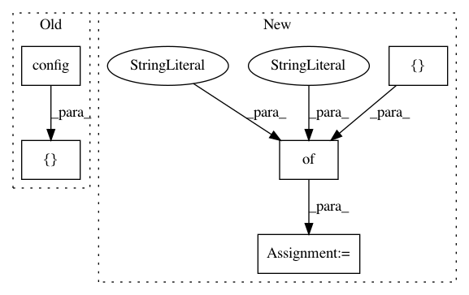

0e26a337bd0808e85152ccddd8d1fd29f24784e9,examples/2d-measure-accuracy.py,,train,#,70
Before Change
"reduce": [tf.reduce_mean,hg.losses.wgan_loss.linear_projection,tf.reduce_sum,tf.reduce_logsumexp],
"reverse": [True, False]
}
losses.append([hg.losses.wgan_loss.config(**loss_opts)])
losses.append([hg.losses.lamb_gan_loss.config(**loss_opts)])
encoders.append([hg.encoders.linear_encoder.config(**encoder_opts)])
custom_config = {
After Change
"projections": projections
}
stable_encoder_opts = {
"max": 1,
"min": -1,
"modes": 8,
"projections": [[
"function:hypergan.encoders.linear_encoder.modal",
"function:hypergan.encoders.linear_encoder.sphere",
"function:hypergan.encoders.linear_encoder.linear"
]],
"z": 16
}
losses = []
loss_opts = {
In pattern: SUPERPATTERN
Frequency: 3
Non-data size: 5
Instances
Project Name: HyperGAN/HyperGAN
Commit Name: 0e26a337bd0808e85152ccddd8d1fd29f24784e9
Time: 2017-02-26
Author: mikkel@255bits.com
File Name: examples/2d-measure-accuracy.py
Class Name:
Method Name: train
Project Name: HyperGAN/HyperGAN
Commit Name: d2b0de6a115a74b633dab330c5f69c27421afae9
Time: 2017-02-28
Author: mikkel@255bits.com
File Name: examples/2d-measure-accuracy.py
Class Name:
Method Name: train
Project Name: HyperGAN/HyperGAN
Commit Name: f91e7ffdcb2cba161c6195cf8aefc8888a2e3527
Time: 2017-02-24
Author: mikkel@255bits.com
File Name: examples/2d-measure-accuracy.py
Class Name:
Method Name: train